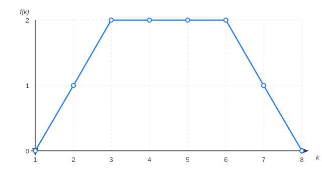
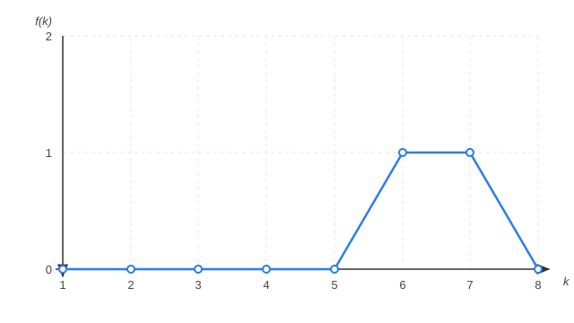
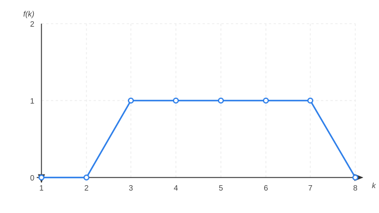
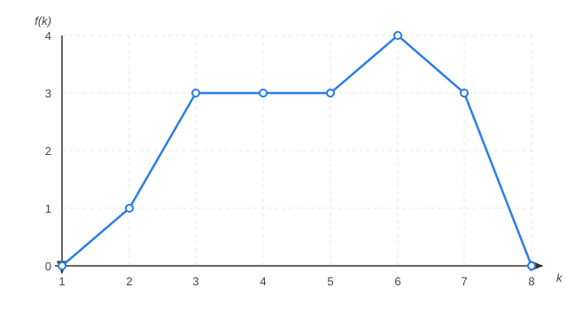

算法挑战赛2026.11.5 · 程序员节与画橙子(Hard Version)
题目概述
游戏中,n 个橙子围成一个环,按顺时针方向编号为 1, 2, …, n,第 i 个橙子的颜色为 a[i],第 n 个橙子的下一个是第 1 个橙子
每轮游戏,勤叶选择一个起点,沿顺时针方向连续给 k 个橙子画上 ICPC 徽标.由于 r 是勤叶的幸运数字,每有一种颜色在这 k 个橙子中恰好出现 r 次,勤叶的开心值就增加 1.每轮游戏的开心值从 0 开始计算
对于每个 k=1,2,…,n,请计算:将全部 n 个起点对应的开心值相加,结果是多少?
传送门:ZJUTOJ | 程序员节与画橙子(Hard Version)
思路推导
正着直接枚举显然是 $O(n^3)$ 的(枚举长度、枚举起点、再统计颜色各一层),那么我们得换个角度思考
可以发现的一点是,这题的枚举方式不止是按照题目意思直接模拟一种,所以我们要转换枚举角度
这里发现除了题目描述的,也可以枚举选择的起点,也可以选择枚举颜色种类,然后我们来考虑这两种枚举是否可以完成统计
枚举起点
如果是枚举起点的话,那么就变成类似一个双指针的做法,这样能降到 $O(n^2)$
每次枚举开头,然后另一个指针每次往右,计算答案就行
这种做法完全够满足第一题的数据大小
枚举颜色
对于每一种颜色,因为要恰好出现 r 次才会对答案产生贡献,而不同颜色的贡献又互不干扰,所以我们可以分成不同的颜色来考虑
对于一段含有 r 个相同颜色 x 的段,能贡献什么?
设输入为:
1 | 8 2 |
我们先考虑颜色 1,它出现在第 2、3、8 位
第一次出现 2 个 1 的段是第 2 和 3 位,可以发现,只要这一段恰好只包含这两个 1(而不含第 8 位上的那个 1),这些段的答案都会增加 1
枚举一下哪些段恰好只包含两个 1:
| 起点 | 恰好包含的两个 1 | 可行的长度 k |
|---|---|---|
| 1 | 第 2、3 位 | 3,4,5,6,7 |
| 2 | 第 2、3 位 | 2,3,4,5,6 |
| 3 | 第 3、8 位 | 6,7 |
| 4 | 第 8 位与下一圈的第 2 位 | 7 |
| 5 | 第 8 位与下一圈的第 2 位 | 6 |
| 6 | 第 8 位与下一圈的第 2 位 | 5 |
| 7 | 第 8 位与下一圈的第 2 位 | 4 |
| 8 | 第 8 位与下一圈的第 2 位 | 3 |
把每种长度 k 上满足条件的段数统计出来,就是颜色 1 对每个 k 的贡献:
1 | k 1 2 3 4 5 6 7 8 |
再分开看刚才那三段(第 2、3 位;第 3、8 位;第 8 位与下一圈的第 2 位),第一段随 k 的变化是:

图 1:只取第 2、3 位的两个 1 时,贡献随 k 的变化
当长度很小的时候,随着长度的增加,对当前长度的贡献值是增加的,但是到了一定程度,又保持不变了,最后下降
同理下一段得到的是:

图 2:只取第 3、8 位的两个 1 时,贡献随 k 的变化
这一段没有上升和下降的过程,只剩下两个点连成的一段平台
还有一段是:

图 3:取第 8 位与下一圈的第 2 位这两个 1 时,贡献随 k 的变化
诶?然后再把这三段的贡献各自合并起来不就行了?

图 4:三段合并后,颜色 1 的总贡献随 k 的变化
每种长度的,各自获取自己所需的答案,再求和,就是答案
那么接下来怎么统计答案呢?这样看似好像也还是 $O(n^2)$ 的?
因为这是一个分段函数(上升—平台—下降),所以,只要记录斜率的变化位置和大小,就能得到答案了
统计各自答案
首先,经过观察,显然中间平的那一段的头尾,斜率需要 -1,函数的起始点和结尾点,需要 +1
然后初始在 1 的时候,答案是 0,根据变化,每走一个点,答案就随着斜率变化一点,这样就能算出最终答案了
参考代码(统计斜率版本)
1 |
|
但是实际上,还有一个更高效的维护方式,就是直接维护二阶差分
二阶差分
差分指的是,每一位由后一位和前一位做差,得到的新数组,也就是记录变化值
二阶指的就是,做两次差分,可以类比二阶导数理解
二阶差分用于处理在一个数组的连续区间上进行等差序列的增减
例如:给 1~5 这五个位置分别增加 1,2,3,4,5
多次操作后,问数组的最终值
因为差分不需要修改整个序列,只需要修改一个头一个尾就行,这样可以大大减少维护的复杂性
1 | 下标 0 1 2 3 4 5 6 7 8 9 10 |
然后如果是递减,也是类似,手动算一下二阶差分就行
然后我们来看这个题目中的二阶差分,上面颜色 1 的那段平台函数:
1 | 下标 0 1 2 3 4 5 6 7 8 9 10 |
规则很清楚了,中间平的那一段的头尾,需要 -1,函数的起始点和结尾点,需要 +1
以上面那个样例(颜色 1 的三段)为例,三段分别在二阶差分数组上做的是:
1 | 下标 0 1 2 3 4 5 6 7 8 9 |
两次前缀和:
1 | 下标 0 1 2 3 4 5 6 7 8 9 |
取 k = 1 ~ 8,得到的就是颜色 1 对每个长度的贡献 0 1 3 3 3 4 3 0,和上面图 4 完全一致
进一步思考
那么接下来,可以考虑的是,怎么处理循环的问题,要是直接复制两段,会不会又重复计算的风险,
其实并不会,这里我的常规考虑方法是,看枚举的变量能不能控制,只要我枚举的变量不重复,就一定不重复.
假设我们枚举的是头,也就是 r 个相同元素开头的那一个,只要这个不重复,整体就不会重复,这个位置枚举的范围是可以固定的,只要不超过 n 就行了
所以可以直接简单的复制两段得到答案
参考代码(二阶差分版本)
直接对各个颜色分类,然后每个颜色各自复制就行,接下来每 r 个算一次,用二阶差分快速记录,然后再做两次前缀和,得到答案,
下面是跃迁学长的代码,我写的太丑陋了,就不放出来了
1 |
|
按照这种写法,时间复杂度是O(nlogn)
但是实际上注意一下颜色是不超过n的,也可以使用vector降到O(n)
总时间复杂度O(n),空间复杂度O(n)
后记
本题目由我的队友勤叶编写,我,队友半岛铁盒,学长跃迁和离歌参与了验题
题目中的图片是我在程序员节活动所画的橙子
题目难度不小,但是我认为确实是好题,希望大家对题目满意